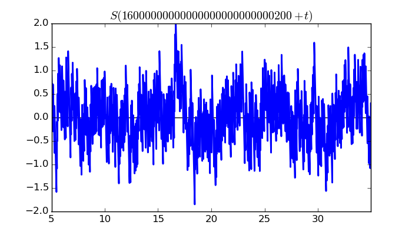
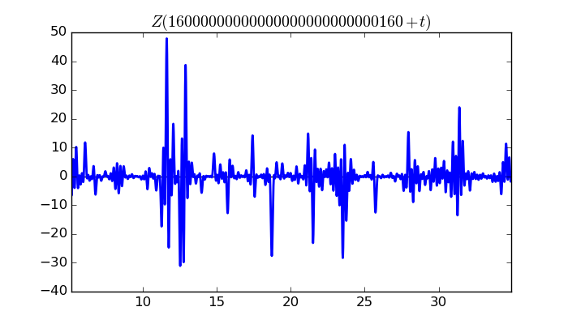
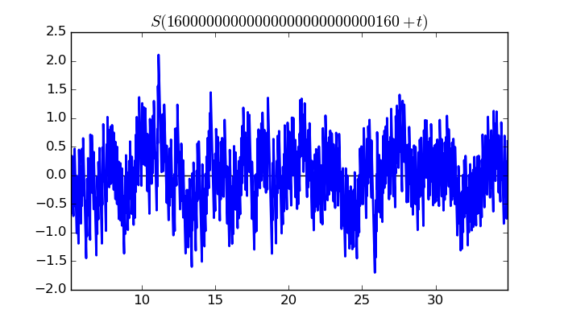
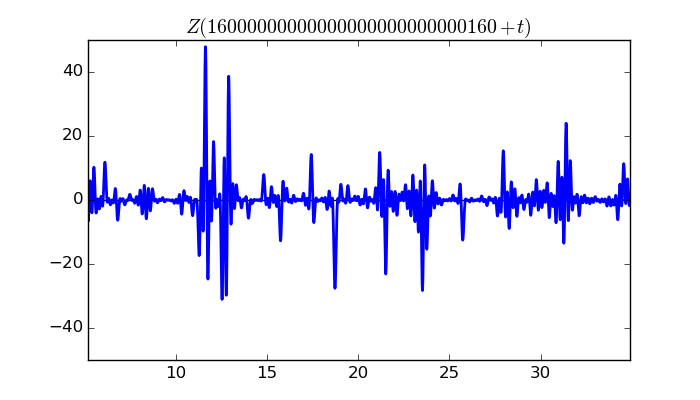
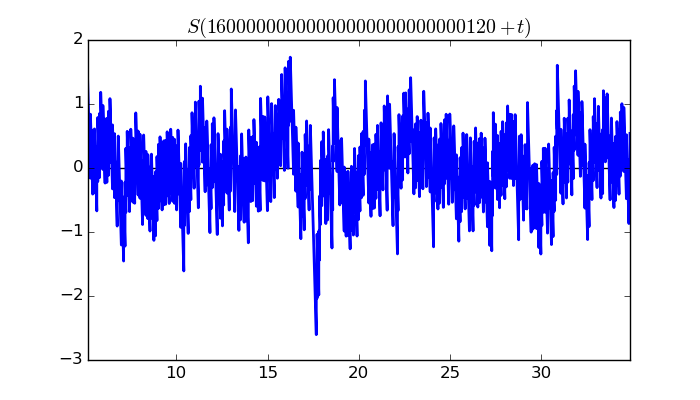
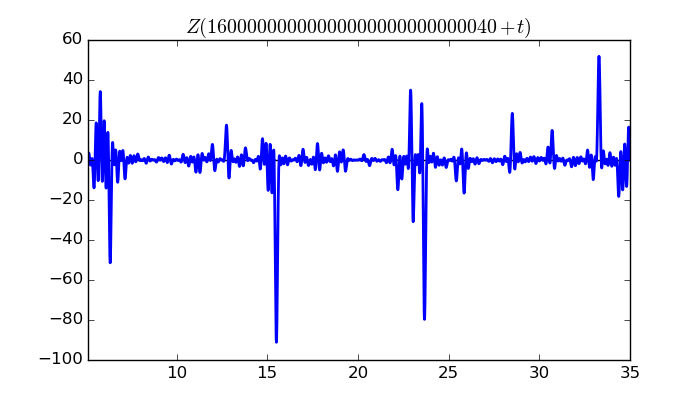
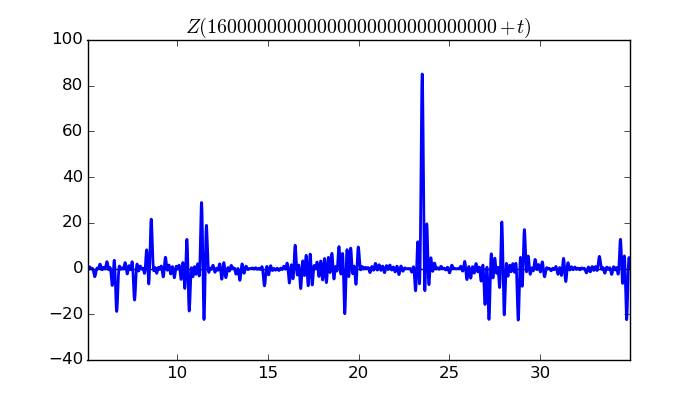
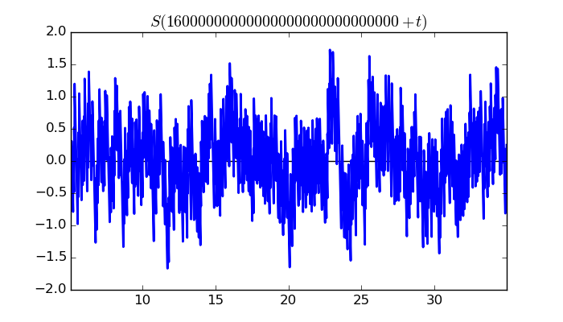

Computations of the Riemann zeta function
These pages sorted by the size of $t$
These pages sorted by the size of $Z(t)$
These pages sorted by the size of $S(t)$
Here are some pictures of and information about $Z(t)$
and $S(t)$ for some large values of $t$. The $Z$ function is the zeta function on the critical line, rotated
so that it is real, so
\[
Z(t) = e^{i Arg(\zeta(1/2 + it)} \zeta(1/2 + it)
\]
$S(t)$ is
the argument of $\zeta(1/2 + it)$, properly interpreted. In some way, it measures irregularity in the distribution
of the zeros of the zeta function.
These are from computations run by Ghaith Hiary and myself, based on the algorithm described
in Ghaith's paper (also available
at the arXiv).
These computations have been run on a variety of machines. Initially, we used machines on the Sage cluster
at the University of Washington (thanks to William Stein and the NSF), then later the riemann cluster
at University of Waterloo (thanks to Mike Rubinstein). Currently, computations are being run at the
University of Bristol on the LMFDB machines (funded by
EPSRC) and on
BlueCrystal.
If your web browser window is big enough, in the top right of each section below you will
see a plot of Z(t), in the bottom left you will see S(t), and in the bottom right you will see
a zoomed in plot of Z(t). Things are sized roughly so that this looks good on my 1080p monitor.
The images are all links that will take you to a zoomable version of the plot.
You can click on any image for a bigger version. Also, you can look at a list of all of the images:
Z(t) or S(t).
See also:
-
Ghaith Hiary's similar description of these computation.
-
Slides (with some typos and bad mistakes)
from a talk I gave on this stuff at MSRI in April 2011. Paper coming one day.
-
The LMFDB, which should contain this data some day.
Page 0 Page 1 Page 2 Page 3 Page 4 Page 5 Page 6 Page 7 Page 8 Page 9 Page 10 Page 11 Page 12 Page 13 Page 14 Page 15 Page 16 Page 17 Page 18 Page 19 Page 20 Page 21 Page 22
Page 13
$\zeta(1/2 + it)$ around $t = 16000000000000000000000000200 \approx 1.6 \times 10^{ 28 }$
Largest value of $Z(t)$ in this graph:76.51552714
Value of $t$ for which the maximum occurs:16000000000000000000000000217.67502734
Value of $\zeta(1/2 + it)$:$73.29971836 - 21.94942328i$
Maximum of $S(t)$ in this range:1.985930957



$\zeta(1/2 + it)$ around $t = 16000000000000000000000000160 \approx 1.6 \times 10^{ 28 }$
Largest value of $Z(t)$ in this graph:47.88757599
Value of $t$ for which the maximum occurs:16000000000000000000000000171.63344922
Value of $\zeta(1/2 + it)$:$25.51660348 + 40.52311538i$
Maximum of $S(t)$ in this range:2.105122285



$\zeta(1/2 + it)$ around $t = 16000000000000000000000000120 \approx 1.6 \times 10^{ 28 }$
Largest value of $Z(t)$ in this graph:159.8677628
Value of $t$ for which the maximum occurs:16000000000000000000000000137.47948047
Value of $\zeta(1/2 + it)$:$-75.73409037 - 140.7907992i$
Maximum of $S(t)$ in this range:-2.6040471



$\zeta(1/2 + it)$ around $t = 16000000000000000000000000080 \approx 1.6 \times 10^{ 28 }$
Largest value of $Z(t)$ in this graph:91.55816467
Value of $t$ for which the maximum occurs:16000000000000000000000000090.19130078
Value of $\zeta(1/2 + it)$:$59.07766963 + 69.94802692i$
Maximum of $S(t)$ in this range:1.876948858


$\zeta(1/2 + it)$ around $t = 16000000000000000000000000040 \approx 1.6 \times 10^{ 28 }$
Largest value of $Z(t)$ in this graph:-91.12304976
Value of $t$ for which the maximum occurs:16000000000000000000000000055.49999609
Value of $\zeta(1/2 + it)$:$52.44663336 - 74.51684942i$
Maximum of $S(t)$ in this range:-1.744488991



$\zeta(1/2 + it)$ around $t = 16000000000000000000000000000 \approx 1.6 \times 10^{ 28 }$
Largest value of $Z(t)$ in this graph:85.11406342
Value of $t$ for which the maximum occurs:16000000000000000000000000023.50099609
Value of $\zeta(1/2 + it)$:$82.83679961 + 19.55679988i$
Maximum of $S(t)$ in this range:1.726944451



$\zeta(1/2 + it)$ around $t = 15314126276405630250797411782 \approx 1.53141262764 \times 10^{ 28 }$
Largest value of $Z(t)$ in this graph:6254.524467
Value of $t$ for which the maximum occurs:15314126276405630250797411802.63212109
Value of $\zeta(1/2 + it)$:$4918.299261 - 3863.8593i$
Maximum of $S(t)$ in this range:2.770847179


$\zeta(1/2 + it)$ around $t = 15000000000000000000000000000 \approx 1.5 \times 10^{ 28 }$
Largest value of $Z(t)$ in this graph:55.10159952
Value of $t$ for which the maximum occurs:15000000000000000000000000001.074996094
Value of $\zeta(1/2 + it)$:$53.93410265 - 11.28267878i$
Maximum of $S(t)$ in this range:1.724149125


$\zeta(1/2 + it)$ around $t = 13344546663788612145413629132 \approx 1.33445466638 \times 10^{ 28 }$
Largest value of $Z(t)$ in this graph:-3328.313325
Value of $t$ for which the maximum occurs:13344546663788612145413629152.36499609
Value of $\zeta(1/2 + it)$:$961.3507601 + 3186.451679i$
Maximum of $S(t)$ in this range:-2.729606705


$\zeta(1/2 + it)$ around $t = 13303254076595736823947097592 \approx 1.33032540766 \times 10^{ 28 }$
Largest value of $Z(t)$ in this graph:-6930.159509
Value of $t$ for which the maximum occurs:13303254076595736823947097612.82299609
Value of $\zeta(1/2 + it)$:$6737.608783 + 1622.263453i$
Maximum of $S(t)$ in this range:-2.566271646